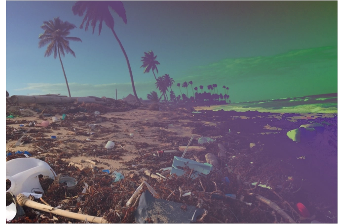
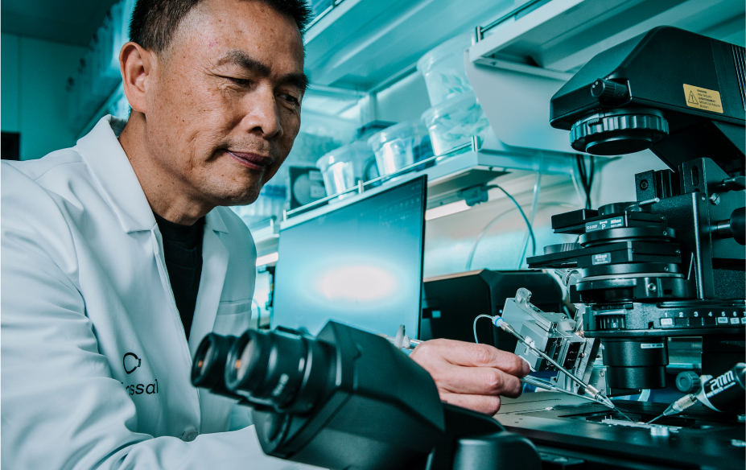

A BetterWorld

LOYAL TO THE WORLD AROUND US.
For the first time in the history of humankind, we are in control of a science with the power to reverse and prevent biodiversity loss on a large scale. We can heal a hurting planet. We can protect the species living on it. We can ethically decipher and protect genetic codes. And we can begin to turn the clock back to a time when Earth lived and breathed more cleanly and naturally.
This is not an option for us. It is an obligation known as thoughtful disruptive conservation.

FOR THE PLANET.
FOR THE ANIMALS.
FOR THE FUTURE.
We are evolving
for the sake of
tomorrow.
Human enterprise is responsible for many amazing developments. But many of them came at a cost to our planet and the natural resources the planet has provided for countless millennia. Colossal is leading the charge to restore what has been lost or is at risk of being lost.

"Since the industrial revolution we've been on an ever-quickening pace of ceaseless taking from nature. Now is the time to start learning as a civilization how to return and care for what we have taken. Colossal is a bold start that will challenge us to listen and learn from the harmony of nature to bring back the beauty of it's song. What’s at stake is no less than a profound reorientation of the purpose of our existence here."
Tom Chi, founder of GoogleX ,
founding partner of At One Ventures
Our
Long term
Effects

It is time humanity adopts a collective “we” when addressing the long term effects of our industrial and agricultural revolutions. These advancements have led to our benefit, while dramatically harming species around us.
- OVERFISHING
- OVERHUNTING
- POLLUTION
- HABITAT DESTRUCTION
- FERTILIZERS & PESTICIDES
The above are all byproducts of what humans would consider progress. However, the detriment to species of plant and animal is vast and varied.
repopulating
the
megafauna
Megafauna. The definition is simple: the large or giant animals that inhabit an ecosystem or a geological period.
So, think big. woolly mammoths. Hippos. Elephants. Giraffes. Rhinoceri. Large bovines.
Some of these megafauna are still with us. But far too many have gone extinct. The impacts of this are mega-sized. Megafauna typically are apex predators and thus affect the entire food chain. They stomp out or eat invasive vegetation, pack certain harmful gases back into the turf, or in some instances kick up the earth and distribute nutrients. Their roles in the health of a given ecosystem can not be overstated.
However, due to climate change, pollution, and other human impacts, the numbers of megafauna are dwindling - as the following chart illustrates:
Extant and lost megafauna
Megafauna and ecosystem function from the Pleistocene to the Anthropocene
Yadvinder Malhi, Christopher E. Doughty, Mauro Galetti, Felisa A. Smith, Jens-Christian Svenning and John W. Terborghe
Edited by Robert M. May, University of Oxford, Oxford, United Kingdom, and approved December 10, 2015 (received for review October 6, 2015)
Megafauna are just one indicator out of thousands and thousands.
We are listening and learning. And with disruptive conservation techniques there is a way to turn it all around.
Industrialization of whaling has reduced whale densities
The Sumatran rhinos are on the brink of becoming extinct
THAN 80
In the last three generations Asian elephant numbers have dropped significantly

REWILDING
REALLY
WORKS.
REWILDING:
The reintroduction of lost animal species into their natural environments
Thoughtful disruptive conservation techniques and innovative thinking have produced amazing results already. Take the reintroduction of wolves into Yellowstone as an example.
Early in the 20th century, wolves were all but killed off in Yellowstone. The effects were dramatic. First, elk were no longer forced to look out for predators. So they became abnormally sedentary and started eating the trees closest to them - which coincidentally were a variety of willow tree that beavers needed to make dams. When the beavers ran out of their required wood supply, they left.
Eventually, the beaver populations dwindled down to one colony, and the rivers became clogged with fallen trees and other debris. The lack of beaver dams also reduced the amount of calm pools for fish to breed in and the lack of natural buffering led to run-off in certain areas of the rivers.
This would all change.
In 1995 The Yellowstone Wolf Project reintroduced wolf populations into the park. The effects were immediate. The chain reaction started right away. Elk had to run for their lives (as they normally do), taking them away from the willow trees that beavers needed. The beavers returned. So did their dams. And the park is remarkably healthier now - from fish and birds to vegetation and water quality.
Read more aboutThe Yellowstone
Wolf Project +

A study published in the journal
Conservation Letters concludes that:
AT LEAST
48 SPECIES
HAVE BEEN SAVED BY RECENT
CONSERVATION EFFORTS
LET THE RESTORATION CONTINUE.
Scientists have caught onto the notion of thoughtful disruptive conservation and the value that critical species play in our delicate ecosystems. Through genetics, the world sees a way forward with protecting the genetic code of those species which are currently threatened, extending into the de-extinction of climate-critical species whose time has already passed - either naturally or due to human-accelerated causes. Colossal is currently focused on the de-extinction and eventual rewilding of the cold-tolerant elephant mammoth hybrid.
So, we can now answer this question,
HUMANITY HAS
CAUSED BE
UNDONE?”
The answer is yes.
The answer is the Florida panther, the black-footed ferret, the American bison and more. When we focus on preservation through genetics, we see the results. Disruptive conservationism is alive and well, and growing stronger with each new volunteer, discovery, genetic advancement, etc.
ADVANCING
SCIENCE
& GENETICS
“Biology is the most powerful technology ever created. DNA is software, proteins are hardware, cells are factories.”
Arvind Gupta
While we may still be in search of the meaning of life, the boundaries of the universe, and what happens after death, humanity is no longer in search of what occurs at the microscopic level. We now know that there is a biological technology to it all. And genetics is the mechanism that makes life possible, diverse and wonderful. This is the key - advancing the science of genetics. It is our core mission and at the center of everything we do in our efforts to heal this planet and create a better world.
Today, genetics and gene editing continues evolving at a torrid pace, especially in the realm of CRISPR Cas9 Genome Editing. Last year, alone, scientists and CRISPR achieved absolutely incredible feats:
Genetic engineers used the Cas9 protein to isolate and remove the sickle cell gene from human DNA; paving the way for the elimination of this ravenous illness
Genetically-enhanced animals were first born, including pandemic-proof pigs, chickens resistant to the avian flu, and a more efficiently reproducing bull that will lead to less agricultural methane
The FDA greenlighted CRISPR-based COVID tests that could isolate and identify the virus without requiring lab services
Massive progress was made in the specific field of altering mitochondrial DNA - which before was an almost impossible riddle to solve; this is pivotal because mitochondrial abnormalities can lead directly to human fatality
The 2020 Nobel Prize in Chemistry was awarded to a pair of female genetic engineers for their breakthroughs in CRISPR
For more on CRISPR and to gain a foundational knowledge on genetics
CRISPR
INNOVATING
A BETTER
FUTURE

A better world starts today. With us. With you. And everytime we get involved, learn about conservation and act on it, volunteer, strive to be better, we get one step closer.
We have already established that conservation and preservation, as we know them, are admirable and effective. However, we have the ability to super-power these efforts and make them even more efficient in turning back the clock on planetary harms resulting from human activities.
SUMATRAN RHINO
& DISRUPTIVE
CONSERVATIONISM.
To be disruptive means to do things differently. Upset the status quo and not back down. Energy and novel thinking of this sort are both at play currently in an almost-worldwide collective effort to save the Sumatran rhino.
The only two-horned rhino left in existence. Isolated and dwindled down to a total of 80 in population. Locked into landscapes that make breeding in the wild next to impossible.
The situation for the Sumatran rhino was dire.
That is until the science world united with a disruptive plan to save the species. Years later, through relocation and focused efforts to promote breeding in safe environments, the Sumatran rhino has been given a strong, fighting chance and the outlook is increasingly positive.
Genetics enters the picture moving forward with de-extinction efforts aimed to accelerate the conservation of this megafauna by continually sequencing its genetic code in order to make a full reference genome for the species, thus preventing a total loss from ever taking place. This example is a true shining light in the efforts taking place today. And this didn’t happen in a silo. Governments, zoos, local entities, volunteers, worldwide federations and charities all played a hand.
It’s a
better
world
when we
all work
together.
better
world
when we
all work
together.
THOUGHTFUL DISRUPTIVE CONSERVATION
&
PRESERVATION
OF TOMORROW.
COLOSSAL BELIEF SYSTEM
BACKING UP SPECIES
The woolly mammoth is only the first drop into the bucket of future conservation efforts.
It is critical to have a solid foundation in saving, conserving and ultimately building species that do more than marginally survive. We are narrowing the gap of bioengineering species that thrive alongside us, and building the bridge that ultimately crosses that divide to the better world we all desire and deserve. To accomplish this, it is the construction of a DNA database - a repository of the recipe for living creatures, so that none face the theft of their existence.
Repopulating Endangered Species
The accelerated rate of extinctions in the last hundred years has far exceeded any naturally selective extinctions in history.
[ Source: Proceedings of the National Academy of Sciences ]
This fact drives our efforts of rewilding and repopulation of the flora and fauna critically endangered today. Replenishing the numbers of these species has a direct impact on myriad links in our environmental chain of existence. With the creatures, so goes the land. Without restoring harmony to what exists, we risk failing at evolving ourselves. Striving for a better world for the endangered species will have an immediate positive ripple effect across our lives.
Be kind,
rewind.
Modern leaps in biosciences advancements have made de-extinction an operational reality in the labs of Colossal. To make a better world, we must be willing to toss that first pebble into the pond if we ever expect the ripples of a better world to occur.
BEYOND
CONSERVATION
In addition to existing conservation efforts, the world needs to also adopt new thoughtful disruptive techniques, which requires us to look deeper, examining DNA, genetics, life’s code structure - and then - be able to manipulate it in ways to promote, sustain and enhance lifeforms that contribute to climate change reversal, carbon and methane sequestration, plastic degradation and so on.
The weight of humanity is statistically unbearable.
Genetic science can make a difference in three key ways:
Climate
ENVIRONMENTS
AGRICULTURE

Carbon Capture & Methane Sequestration
PLANTLIFE +
Plants are evolutionary experts at capturing carbon. Through genetic-enhancements, we could soon super-power their carbon-consuming oxygen-producing abilities. And since humans are creating an excess of nearly 20 gigatons of carbon annually that normal plants cannot process, genetics may be our only hope of narrowing the gap between suffocating greenhouse conditions and a manageable atmospheric carbon load.
MAMMOTH +
When it comes to carbon capture and methane sequestration the cold-tolerant elephant mammoth hybrid is doubly important. This is because layers of frozen tundra (permafrost) seal off twice as much greenhouse gas than is currently in the atmosphere, according to Smithsonian Magazine. These gases exist due to the megatons of decay occurring beneath the permafrost. Thousands of years of decomposition, locked away. If this were to melt, the results of this release would be predictably catastrophic. However, once we rewild the tundra with enough mammoths, the permafrost will once again be stamped down by their heavy footsteps. This will help to ensure that the gases remain sequestered from our atmosphere.
Energy Alternatives
ALGAE +
Currently, the U.S. Department of Energy recognizes algae as an extremely viable, climate-change-reversing energy source of the future. A not so distant one at that. The movement is gaining so much momentum that even traditional oil companies are looking into algae as a fuel source that not only is clean in and of itself, but also feeds off toxic output from manufacturing and existing, pollutive means of energy production.
How it works is simple: algae, as a basic form of plant matter, contains natural oils that can be extracted by rupturing an algae’s cell wall with soundwaves, and then collected for use as fuel. With genetics, these algae can be enhanced for the purpose of creating this oil which could very soon save humanity and the planet from the current harms of energy production - which has, for the most part, changed very little since the dawn of the Industrial Revolution.
Plastic-Eating Bacteria
According to Geyer, 400 million metric tons of plastics are produced annually around the world. For perspective, this is equal to the weight of 1,000 Empire State Buildings. But why aren’t our oceans filled with Empire State Building-sized monuments of plastic trash?
That’s because scientists have discovered bacteria that literally eat plastic. Whether that’s the original Japanese-discovered Ideonella sakaiensis, that eats PET; to the plastic-degrading fungus found in Pakistan; to a Houston college student that found plastic-hungry microbes in oil; to the German scientists who discovered bacteria that can consume polyurethane. The truth is there. Bacteria can save us from the glut of plastics that threaten our environment. Genetics can play a significant role in this space, by engineering bacteria to be even more voracious consumers of plastic and giving them an efficient means of decomposition and waste after the fact.
Food Security &
Sustainable Agriculture
Not all countries and cultures are blessed with farmable lands. Take Suriname for example - a country on the northeastern coast of South America whose land has been quantifiably measured as only 0.53% arable. For this nation and its population, food production is not sustainable. For its people to eat, they must rely on trade with other nations, which only works out in times of economic prosperity. But we don’t need to look at situations as extreme as that one. Even seemingly prosperous nations with arable pastures can be devastated by rising waters, unusually aggressive storms, unseasonable heat waves and other ravages of climate change. Thus, to secure a sustainable, ethically-farmed food supply for all, genetically modified seed and crop production is one of the only rationally possible solutions.
ETHICAL
ENVIRONMENTALISM,
ONLY.
CONSERVE
BIOETHICS &
GENETICS
As defined by the National Institute of Environmental Health Sciences, bioethics is:
The study of ethical, social, and legal issues that arise in biomedicine and biomedical research. Bioethics includes medical ethics, which focuses on issues in healthcare; research ethics, which focuses on issues in the conduct of research; public health ethics, which addresses ethical issues in public health, and environmental ethics, which focuses on issues pertaining to the relationship between human activities and the environment.
Juris Doctor, Warren P. Knowles Professor of Law and Bioethics, leading American authority on Bioethics
[ Colossal Scientific Advisory Board Member ]
Alta Charo is the Knowles Professor Emerita of Law & Bioethics at the University of Wisconsin, where for over 30 years she has taught classes on biotechnology policy, food and drug law, public health law and bioethics. Alta is now the David A. Hamburg Inaugural Fellow at the Nuclear Threat Initiative, working in its global biosecurity program. She is also an elected member of the American Academy of Arts and Sciences; the American Association for the Advancement of Science; and the National Academy of Medicine. She was a member of Pres. Clinton’s National Bioethics Advisory Commission, worked as a policy analyst at the congressional Office of Technology Assessment and the US Agency for International Development, and served as a senior policy advisor in the Office of the Commissioner at the FDA, focusing on regulatory approaches to emerging technologies.
At the National Academies of Sciences, Engineering and Medicine she co-chaired the committees on guidelines for embryonic stem cell research (2005-2010) and governance of human genome editing (2015-2017), co-founded the forum on regenerative medicine, served on its committee on science technology and law, and now co-chairs its standing committee on “emerging science, technology and innovation.” At present, she is also a member of the World Health Organization’s expert advisory committee on global governance of genome editing, and a member of the organizing committee for the upcoming 2022 US-UK “third international summit on genome editing.”
Chair of Bioethics at Arthur Zitrin, Director of the Center for Bioethics, Professor of Global Public Health, Affiliated Professor in the Department of Philosophy at New York University, widely published author, speaker at TED and TEDx in New York and CERN, Switzerland.
[ Colossal Scientific Advisory Board Member ]
S. Matthew Liao is Arthur Zitrin Chair of Bioethics, Director of the Center for Bioethics, Professor of Global Public Health, and Affiliated Professor in the Department of Philosophy at New York University. He is the author or editor of The Right to Be Loved (Oxford University Press); Ethics of Artificial Intelligence (Oxford University Press); Moral Brains: The Neuroscience of Morality (Oxford University Press); The Philosophical Foundations of Human Rights (Oxford University Press); Current Controversies in Bioethics (Routledge), and over 60 articles in philosophy and bioethics. He has given TED and TEDx talks in New York and CERN, Switzerland, and he has been featured in the New York Times, The Atlantic, The Guardian, the BBC, Harper’s Magazine, Sydney Morning Herald, Scientific American and other media outlets.
From 2006 to 2009, Liao was the Deputy Director and James Martin Senior Research Fellow in the Program on the Ethics of the New Biosciences in the Faculty of Philosophy at Oxford University. He was the Harold T. Shapiro Research Fellow in the University Center for Human Values at Princeton University in 2003–2004, and a Greenwall Research Fellow at Johns Hopkins University and a Visiting Researcher at the Kennedy Institute of Ethics at Georgetown University from 2004–2006. Liao obtained his doctorate in philosophy from Oxford University and his AB from Princeton University. He is the Editor-in-Chief for the Journal of Moral Philosophy, a peer-reviewed international journal of moral, political and legal philosophy.
We Are Helping
Fight Plastic Waste
and Microplastics


Putting an end to the Plasticene Era.
Using the power of synthetic biology, microbial engineering and innovative Colossal technologies, Breaking is at the forefront of humanity's battle against plastic pollution. By identifying and evolving microbes that can convert plastic into harmless natural substances—like carbon dioxide, water and organic matter—bioscience is once again pioneering a sustainable solution to a manmade ecological crisis.


Empowering biology to eliminate
plastic waste.
Breaking is not just addressing a global threat to our future. It is actively building a better one by ensuring a cleaner, healthier planet for all its inhabitants.